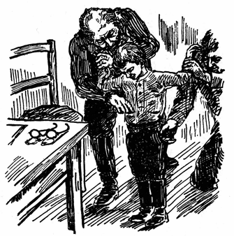

| 身体検査 | |
| ソログープ フョードル | |
| (2016) | |
身体検査
ソログーブ・フョードル
米川正夫訳
フョードル・クジミッチ・チェーチェニコフ――これがソログーブの本名
である。フョードルは名
、クジミッチは父称
といって、父親
の名
に特定
の語尾
をつけて、自分
の名
と併用
するものである。
彼
は千八百六十三年
ペテルブルグで生
まれた。父
はポルタワ県
出身
の仕立屋
で、母
は農婦
あがりだった。ソログーブが四つのときに父
が死
んで以来
、母
はよその家
の女中奉公
をして一人子
を育
て上
げた。ソログーブは幼
い時
から母
の奉公先
の邸
で、音楽
や演劇
などに親
しむ機会
を持
ち、読書
に対
する深
い趣味
を養
われた。彼
はたくさんの書物
を読
んだが、中
でも愛好
してやまなかったのは『ロビンソン』『リア王
』『ドン・キホーテ』などで、これらの書
はほとんどそらで覚
えていた。
千八百八十三年
、ペテルブルグの師範学校
を卒業
したソログーブは、各地
に移
り住
みながら、教師
を勤
め、傍
ら詩
を作
っていたが、間
もなく長篇小説
『重苦
しい夢
』、続
いて同
じく長篇
の『小悪魔
』を発表
して、一流
の作家
として名
をうたわれるようになった。二十五年間
教育
に尽
して職
を退
いた後
、創作
に心
をうちこんで、千九百二十七年
になくなるまで、じつに二十巻
の著作
を残
した。
ソログーブの最大傑作 は『小悪魔 』とされているが、われわれに最 も愛着 を感 じさせる、親 しみ深 い作品 は短篇 、殊 に少年少女 を主題 にした短篇小説 である。けがれのない少年 の魂 をほめたたえ、これを穢 す大人 の生活 の醜 さ、卑 しさを憎 み呪 うソログーブの気持 は、レース細工 のようにこまやかな、美 しい文章 で、心 にくいまでに写 し出 されている。（訳者）
＊
この世では、いい事といやな事がまじりあい勝ちなものである。一年級
の生徒
でいるのはいい気持
だ――それはこの世できまった位置
を作ってくれるからだ。しかし、一年生の生活にだって、時々いやなことがある。
夜が明
けた。歩き廻
る足音
や、話し声
などがざわざわし始めた。シューラは目をさました。そのとき始
めて気がついたのは、自分の着ているものが何か破
れたという感じだった。それは気持
が悪かった。何か横
っ腹
の辺
で皺
くちゃになったと思うと――やがてその中
にシャツが破
れて、もみくたになったという感覚
が、もっとはっきりして来た。腋
の下が裂
けて、その裂
け口が一ばん下まで届
きそうになったのが感じられた。
シューラはいまいましくなった。つい昨日
、ママにそういったのを思い出した。
「ママ、僕に新
しいシャツを出してよ。このシャツは腋
の下が破
れてんだもの。」
ママの返事はこうだった。
「あしたもう一日
着てらっしゃい、シューラちゃん。」
シューラはいつも不機嫌
な時によくする癖
で、ちょっと顔をしかめながら、さも癪
だというような調子
で、
「だって、ママ、あしたになったらすっかり破
れてしまうじゃないの。ぼく乞食
みたいな恰好
して歩くな厭
だあ！」
けれども、ママはお仕事
の手を止
めようともしないで――一体
あんなにのべつ縫物
ばかりして何が面白
いんだろう！――不足
そうな声でいった。
「うるさいね、シューラ、今お前なんかに構
ってる暇
はないんだよ。ママは忙
しいんですから。そうママに附
きまとってばかりいるなんて、いやな癖
を始
めたものね！ あすの晩
には取っかえてあげるって、そいってるじゃないの。もっと悪戯
を加減
したら、着物
だってもう少しもつのにねえ。お前
ったら、まるで身体
に刃物
でもくっつけてるみたいなんだもの――やり切れやしないわ。」
ところが、シューラは決
して悪戯
っ子ではなかったので、不平
そうにいった。
「これよりか悪戯
を加減
するなんて、どうしたらいいの？ あれよか減
らせやしないや。だって、僕ほんのぽっちりしか悪戯
しないんだもの。悪戯
をするたって、どうしてもしずにいられないだけやってるんだよ。あれっくらいしないわけに行かないや。」
で、とうとうママはシャツを出してくれなかった。ところが、その結果
はどうだったろう！ シャツは裾
まですっかり裂
けてしまった。もうこうなったら、棄
ててしまうより仕方
がない。ほんとに何
て考えのないママだろう！
壁
の向こうでは、ママが早く家を出ようと思って、せかせかと歩
き廻
っている音
が聞
える。ママは外
にいい仕事
を持
っていて、たくさんおあし
がもらえるので、いつまでもやめたくないのだという事
を、シューラは思い出した。それはもちろん、いいことだけれど、やがて今にもママが行ってしまうと、シューラは破
れたシャツを着
て、学校
へ出
かけなければならなくなる――そうしたら、シャツは晩
までには、どんなになるかわかりゃしない！
シューラは素早
くはね起
きて、毛布
を床
へおっぽり出
すと、はだしで冷
い床板
をぱたぱたと大きく鳴
らしながら、ママのところへ飛
んで行
き、いきなりこうわめいた。
「ほうら、ママ、これを見
て頂戴
！ きのう僕そういったじゃないの、ほかのシャツを出
してくんなきゃ駄目
だって。それだのにママがしてくれないもんだから、ね、ほうら、ご覧
よ、こんなになっちまったじゃないの！」
ママは腹
の立
ったらしい目つきでシューラを睨
んだ。そして、いまいましそうに顔を赤くして、ぶつぶつ小言
をいい出した。
「いっそもう裸
で駈
けだしたらいい、この子は！ なんて恥
っさらしだろう！ この子にかかったら、ほんとに手こずってしまう。すっかりわがままになってしまってさ！」
いきなりシューラの両肩
を摑
んで、自分の寝室
へ引っぱって行った。シューラは心配
になって、胸
がどきり
とした。ママはこういった。
「わたしが急
いでるのを知ってるくせに、やっぱりうるさく附
きまとうんだね。ほんとに情
ない子だよ！」
けれど、このシャツのままで打
っちゃって置
かれないのは、もう目に見えていた。仕方
なしに簞笥
をあけて、まだ袖
を通
さない新
しいシャツをとり出した。というのは、ママがきょう着
せてやろうと思
ったシャツは、みんなまだ洗濯屋
へ行っていて、夕方
でなければ返って来
なかったからである。
シューラはすっかり喜
んでしまった。新
しいシャツを着
るのは、とてもいい気持
だった――ごわごわして、ひやりとして、変
に肌
をくすぐるのが、おもしろくってたまらない。袖
を通しながらも、笑ったり、ふざけたりした。けれども、ママはもうその相手
をしている暇
が一分
もなかったので、いそいで出て行ってしまった。
＊
その朝
学校で、お祈
りの前に、講堂
にいるシューラのそばへ、ミーチャ・クルイニンが寄
って来
て、
「君、どうした、持って来た？」とたずねた。
シューラは、新しい歌を集
めた本
を持って来
てやると、きのうクルイニンに約束
したのを思
い出
した。ポケットへ手を突
っこんでみたが、本はなかった。
「じゃ、外套
のポケットへ置
いて来
たんだ。今すぐ取って来
るよ。」
こういって、外套室
へかけ出した。このとき小使
がベルのボタンを押
したので、味
もそっけもない広い校舎
じゅうへ、けたたましいベルの音
が響
き渡った。お祈
りに行く時間
が来
たのだ――これをしなくちゃ授業
を始
めるわけにゆかないのだから。
シューラはあわてた。外套
のポケットへ手
を突
っこんでみたが、手にあたらない。と、不意
に気
がついて見ると、それは人の外套
だった。シューラはさもいまいましそうに叫
んだ。
「やっ、大変
だ、人の外套
へ手を突っこんじゃったあ！」
こういって、自分のを捜
しにかかった。
と、すぐそばで冷
やかすような笑
い声
が聞
えた。悪
たれで通
っているドゥチコフのいやな声だ。シューラは思
いがけなさにぴくっとなった。遅刻
して、たったいま来
たばかりのドゥチコフは、大きな声でこういった。
「おい、君、どうしたい、人
の外套
のポケットさがしかい？」
シューラはぷりぷりした声
で答
えた。
「それが君にどうだってんだい、ドゥチカ？ 君のポケットじゃあるまいし。」
本
がみつかったので、講堂
へ走
って帰
ると、もう生徒
らはお祈
りの整列
をしていた。背
の順
に長
い行列
を作
っているので、小さいのは前の方で聖像
に近く、大きいのはうしろに立っている。そして、どの列
でも右側
にいるのがちょっと高い方で、左側
は低
めの子供
になっている。そればかりでなく、少しわきの方
には、讃美歌
を器用
にこなす子供たちが並
んでいて、その中
の一人はいつも歌
い出
す前に、そっといろいろな声で唸
るような真似
をする――これを称
して、調子
を決
めるというのだ。みんな大きな声で、さっさと無表情
に歌った。まるで太鼓
でもたたくような工合
だ。当番
の生徒
は祈禱書
を見ながら、歌わないで読むことになっている祈禱
を朗誦
した――その朗誦がやはり大声の無表情
で、一口にいえば、何もかもいつもの通
りだった。
お祈
りのあとで、ひと騒動
もちあがった。
＊
二年生のエピファーノフが、ナイフと一ルーブリ銀貨
をなくしたのである。この赤
いほっぺたをした太
っちょの子供は、盗難
に気がつくと、わっと泣声
をあげた。ナイフは真珠貝
の柄
のついた綺麗
なものだったし、一ルーブリ銀貨
はのっぴきならぬ用
にいるのであった。で、先生
のところへいいつけに行
った。
さっそく調
べが始
まった。
ドゥチコフは、シューラ・ドリーニンが外套室
で、人の外套
のポケットを探
っているのを、自分の目で見たと申
し立
てた。シューラは生徒監
の部屋
へ呼
ばれた。
生徒監
のセルゲイ・イヴァーヌイチは、うさん臭
そうな目付
で、ひたとこの少年
を見つめた。
......やがて今に緊急教員会議
が招集
され、続
いて小泥棒
は退学処分
になる......。それは何も一向
いいことではない筈
なのだけれど、いうことを聞かぬいたずら者
の腕白
どもに、老教師
はもうほとほと手を焼
いているので、まるで探偵
みたいな顔
つきをしながら、まっ赤になってもじもじしているこの少年
を見
つめていたが、そろりそろり質問
を始めた。
「なぜお前
は祈禱
の時に外套室
なんかにおったのだ。」
「祈禱
の前です、先生
。」おびえて上
ずった声で、シューラは小鳥
でも啼
くようにいった。
「まあ祈禱
の前としてもよい。」生徒監
はいった。「しかし、わたしはなぜかと聞
いておるのだ。」
シューラはそのわけを話
した。生徒監
は言葉
を続
けた。
「まあ、本
を取
りに行
ったとしてもよい。だが、なんのために他人
のポケットへ手をつっ込
んだのだ？」
「間違
ったんです。」とシューラは辛
そうに答
えた。
「困
った間違
いだな。」責
めるように頭
を振
りながら、生徒監は注意
した。「が、お前いっそ正直
にいってしまったがよい――お前はつい間違
って、ナイフと一ルーブリ銀貨
を取りやしなかったかね？ つい間違
って、え？ ひとつ自分のポケットを見
てごらん。」
シューラは泣
きだした。そして、涙
の合間
にこういった。
「僕なんにも盗
みやしません。」
「もし盗
まなかったのなら、なぜ泣
くのだ？」と生徒監はいった。「わたしは何もお前
が盗
んだとはいやしない。ただ間違
ってしたろうと想像
するまでだ。手にあたったものを握
ってそのまま忘
れてしまったんだろう。ポケットの中
を搔
きまわしてご覧
。」
シューラは急
いでポケットの中から、この年頃
の男の子につきものになっている他愛
のない品々
を、すっかり出して見せた――それから両方
のポケットもひっくり返
した。
「なんにもありません。」といまいましそうにいった。
生徒監
はためすような目つきで、その顔
を見つめていた。
「どこか服
の下にでも紛
れこんではおらんかな、え？ ひょっとしたら、長靴
の中にナイフが落
ちてるかも知れんぞ、え？」
ベルを鳴
らした。小使
がやって来た。
シューラはおいおい泣
いた。あたりのものがばら色
の靄
に包
まれて、ふわふわ動
き出
した。もの狂
おしい屈辱感
に気が遠
くなったのだ。シューラの身体
はぐるぐる廻
されたり、探
りちらかされたりして、隈
なく検査
された。おまけに少しずつ裸
にされた。小使
は長靴
をぬがして、ふるって見た。万一のために、靴下
もはいでみた。バンドもはずし、上着
からズボンも取らせた。何から何までばたばたふるって調
べてみた。

悩
ましいばかりの羞恥
と、人に屈辱
を与
えるきりで、何
の役
にも立たぬ型
ばかりの手続
きを憤
る気持
、その蔭
から躍
りあがらんばかりの喜
びが、彼
の心を貫
いた。破
れたシャツは家
に置いて来
たから、今この職務
に忠実
な教育家
のこわばった手の動きにつれて、新しい小
ざっぱりしたシャツがさやさやと、かすかな音
を立てているのだ。
シューラはシャツ一枚
で立ったまま、おいおい泣
いていた。と、ドアの外
で騒々
しい人声
や、賑
かな叫
び声
などが聞えた。
ドアがどしん
と壁
にぶっつかって、誰
やら赤
い顔をしてにこにこ笑っている子供
がはいって来
た。はずかしさと、悲
しさと、新しいシャツを思う嬉
しさのこんぐらかった中で、シューラは誰
かのうきうきしたような、もじもじしたような声
を聞きわけた。走
って来
たためにやや息
ぎれがしている。
「めっかりました、先生
。エピファーノフが自分で持ってたんです。ポケットに穴
があいてたもんですから、ナイフも銀貨
も長靴
ん中へ落ちてたんです。今なんだか足の工合
が変
だと思
って見たらめっかったんです。」
すると急
に生徒監
はシューラにやさしくなって、頭
を撫
でたり、慰
めたり、服
を着るのを手伝ったりした。
＊
シューラは泣
いてみたり、また笑
い出
したりした。家
へ帰
っても、また泣いたり笑
ったりした。ママに様子
を話
して、訴
えた。
「すっかり服
をぬがしちまったんだよ。あの破
けたシャツを着
てたら、いい恥
さらしをするとこだった。」
それから......それから別
に何ごとがあろう？ ママは生徒監
のところへ出かけて行った。生徒監
を相手
にひと騒
ぎ持ちあげた上、あとで訴
えてやるつもりだったのである。けれどその途中
で、うちの子は授業料
を免除
してもらってるのだったっけ、と思い出した。騒
ぎを持
ちあげるわけに行
かなかった。それに、生徒監
はとても愛想
よく母親
を迎
えて、さんざんお詫
をいったのだから、その上どう仕様
があろう？
身体検査
のときの屈辱感
は、少年の心にいつまでも残
っていた。それは胸
に深く刻
み込まれてしまったのだ。窃盗
の嫌疑
を受
けて、身体検査
までされ、半裸体
の姿
で立
ちながら、職務
に忠実
すぎる男の手
で自由
にされる――これがはずかしくないだろうか？ しかし、これも経験
なのだ。人生に有益
な経験なのだ。
ママは泣
きながらいった。
「何 にもいえないんだからね――大きくなったら、こんな事 どこじゃない、まだまだひどい目にあうかも知 れないんだよ。この世 にはいろんな事 があるからね。」
底本：「日本少国民文庫 世界名作選（一）」新潮文庫、新潮社
２００３（平成15
）年1
月1
日発行
底本の親本：「日本小國民文庫 第十四巻 世界名作選（一）」新潮社
１９３６（昭和11
）年2
月8
日発行
１９９８（平成10
）年12
月復刊
※表題は底本では、「身体検査
」となっています。
※恩地孝四郎（1891-1955）の挿絵を同梱しました。
入力：sogo
校正：湖山ルル
２０１６年1
月1
日作成
青空文庫作成ファイル：
このファイルは、インターネットの図書館、青空文庫（http://www.aozora.gr.jp/）で作られました。入力、校正、制作にあたったのは、ボランティアの皆さんです。